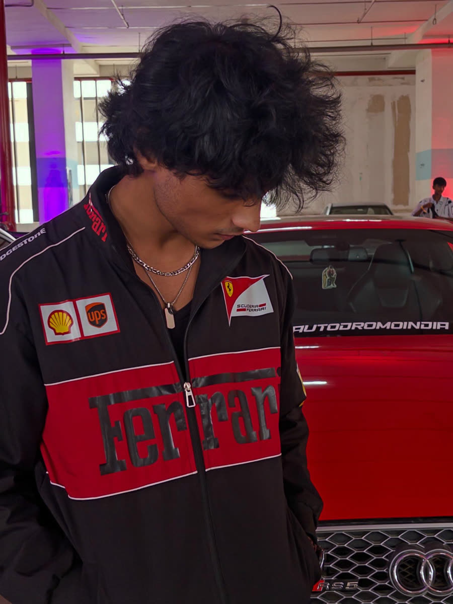
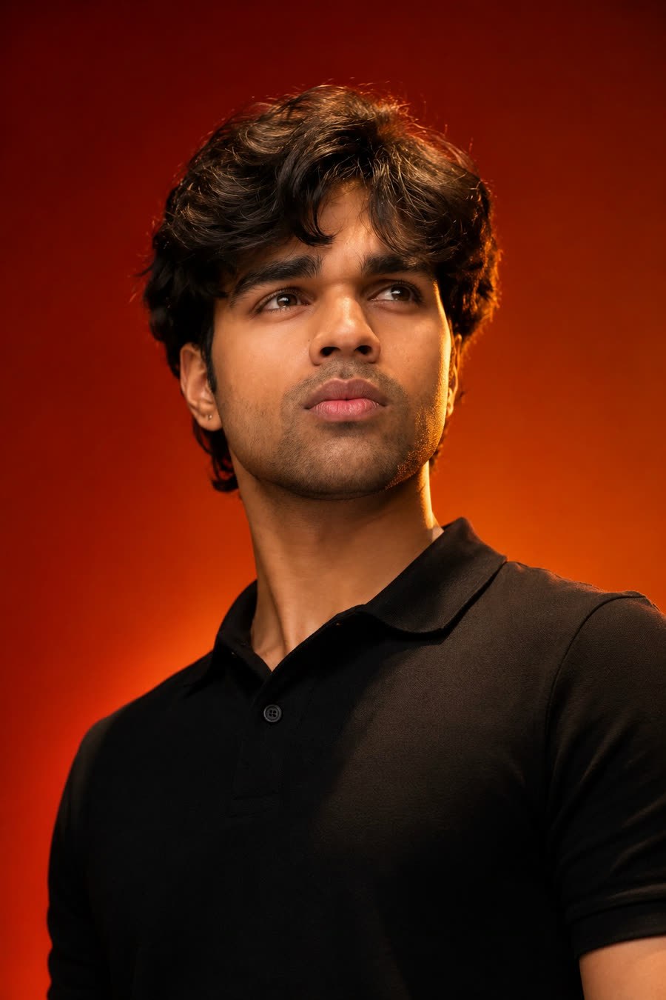
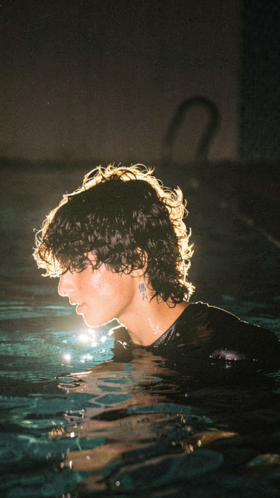
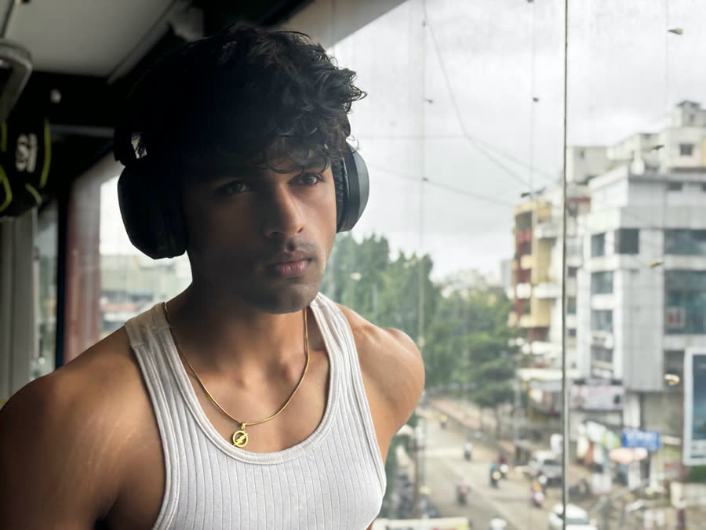
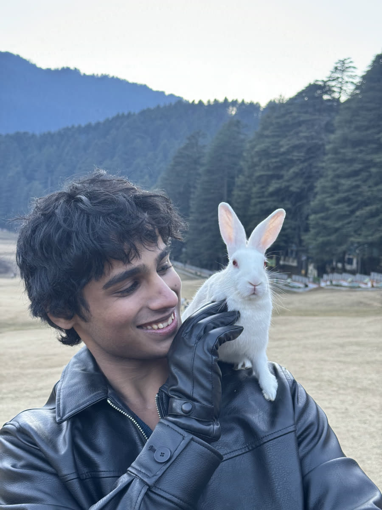
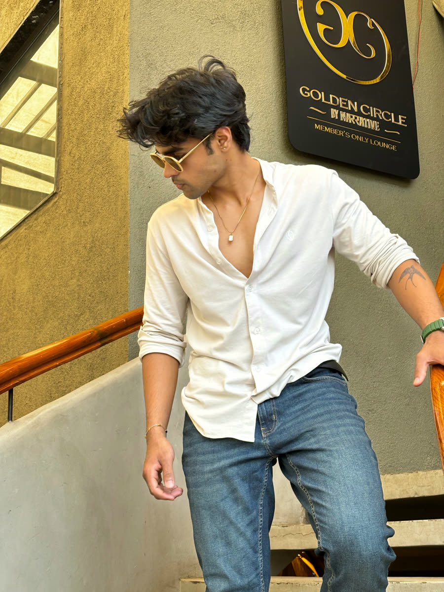
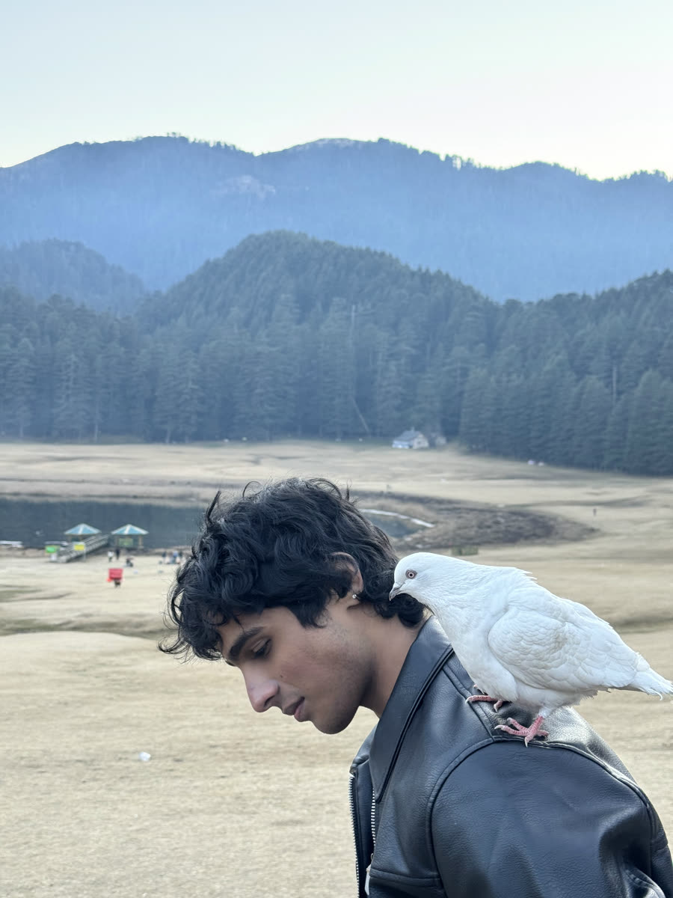
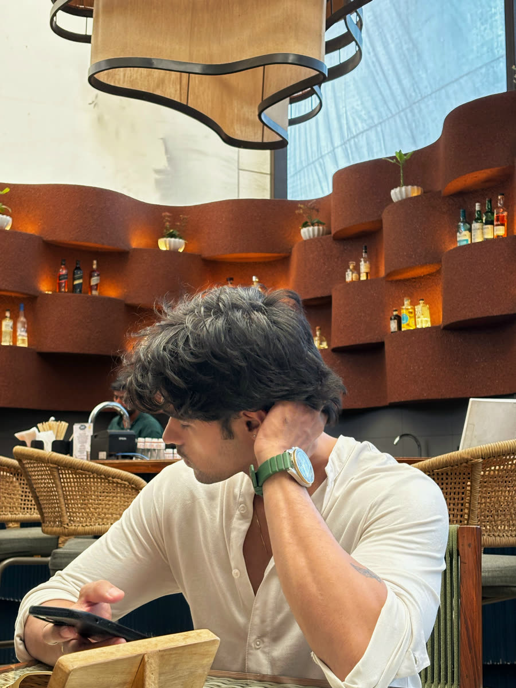
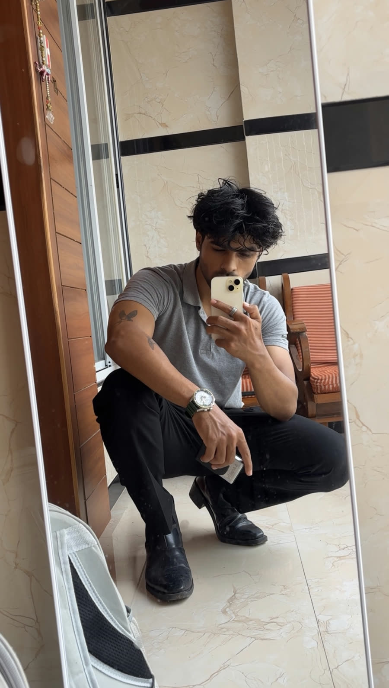

Enquiries
Sahil &Shivam


Studio of two
Social media handling, content creation, growth, websites and modelling for brands.
Get in touchWhat we do
Social media handling
Content calendar, posting, community replies and a monthly report.
Content creation
Reels and product shoots, planned, shot and edited.
Growth strategy
We find what your audience stops for and plan around it.
Custom websites
Fast sites that match your brand and turn visits into enquiries.
Modelling
Campaigns, lookbooks and editorials when a brand needs a face.
Selected work
Reels we planned, shot and edited for brands. Tap one to watch with sound.
Patient story
Dental clinic · Testimonial · 0:41
Manual vs electric toothbrush
House of Tooth · Explainer · 1:03
Braces vs aligners
House of Tooth · Explainer · 1:00
Product review
Personal care · Review · 1:12
Haircare product ad
Haircare · Product ad · 0:35
Tote bag launch
Lifestyle · Launch · 0:25
Founder intro
Events & decor · Brand story · 0:30
Comedy skit
Events & decor · Skit · 0:21
In front of the lens
Campaigns, lookbooks and editorials. When a brand needs a face, we step in.








Work with us
We're a two-person team handling social media for brands end to end: planning, shooting, editing, posting and reporting. We build the website too, and step in front of the camera when a campaign needs a face.
Enquiries